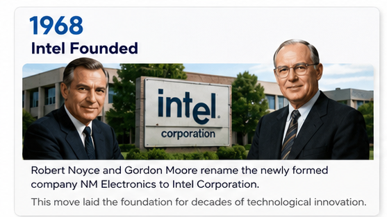
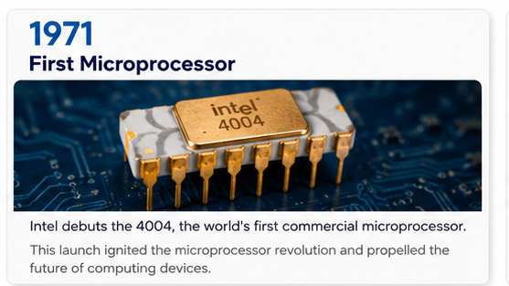
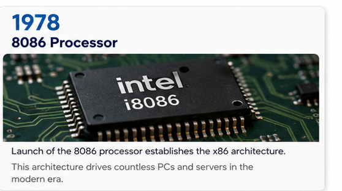
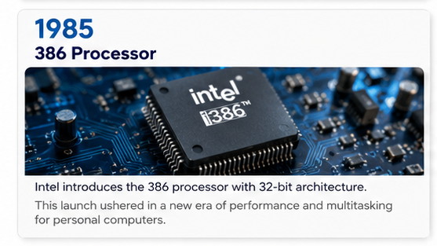
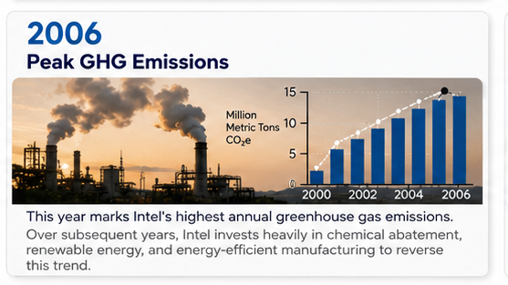
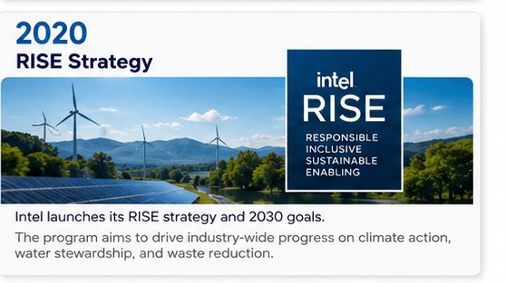
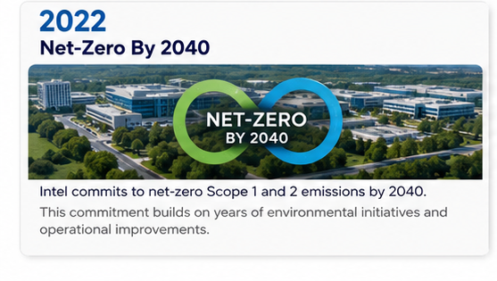
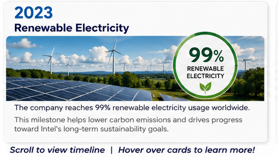
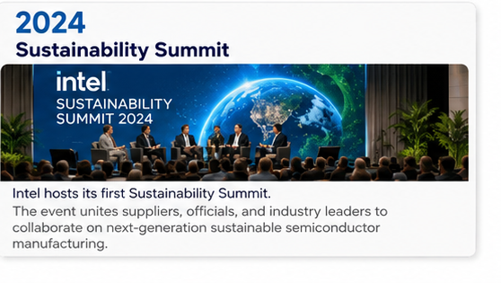

Sustainability Through the Ages.
Explore Intel's journey through time, discovering how our commitment to innovation has shaped a more sustainable future for technology and our planet.
Explore Intel's journey through time, discovering how our commitment to innovation has shaped a more sustainable future for technology and our planet.

Robert Noyce and Gordon Moore rename the newly formed company NM Electronics to Intel Corporation.
This move laid the foundation for decades of technological innovation.

Intel debuts the 4004, the world's first commercial microprocessor.
This launch ignited the microprocessor revolution and propelled the future of computing devices.

Launch of the 8086 processor establishes the x86 architecture.
This architecture drives countless PCs and servers in the modern era.

Intel introduces the 386 processor with 32-bit architecture.
This launch ushered in a new era of performance and multitasking for personal computers.

This year marks Intel's highest annual greenhouse gas emissions.
Over subsequent years, Intel invests heavily in chemical abatement, renewable energy, and energy-efficient manufacturing to reverse this trend.

Intel launches its RISE strategy and 2030 goals.
The program aims to drive industry-wide progress on climate action, water stewardship, and waste reduction.

Intel commits to net-zero Scope 1 and 2 emissions by 2040.
This commitment builds on years of environmental initiatives and operational improvements.

The company reaches 99% renewable electricity usage worldwide.
This milestone helps lower carbon emissions and drives progress toward Intel's long-term sustainability goals.

Intel hosts its first Sustainability Summit.
The event unites suppliers, officials, and industry leaders to collaborate on next-generation sustainable semiconductor manufacturing.
Scroll to view timeline | Hover over cards to learn more!